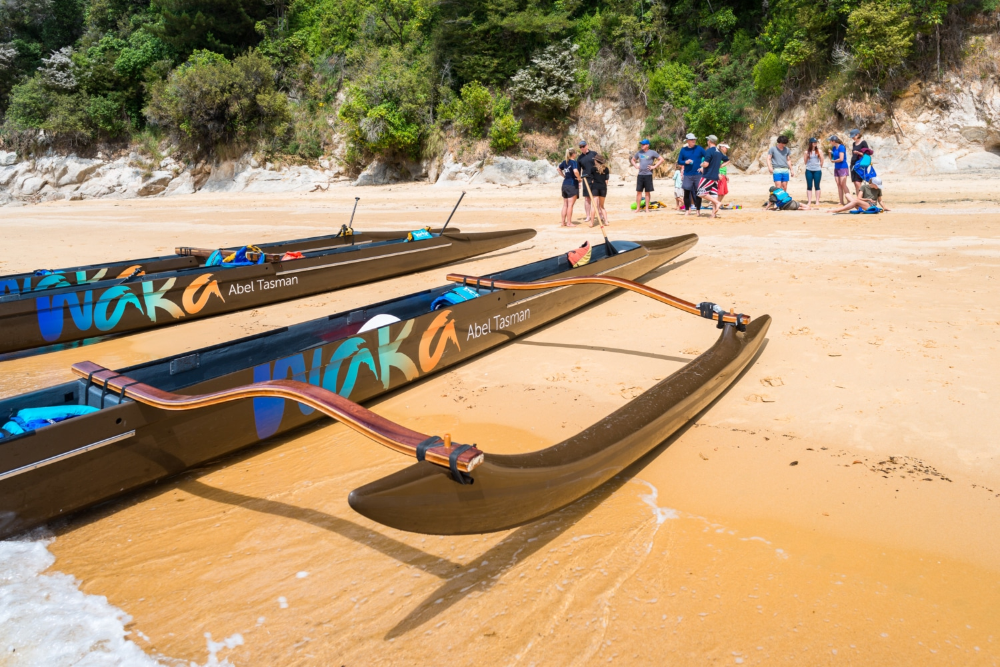

Our story
The living expression of our tūpuna
Waka are the living expression of our tūpuna — the ancestors who read the stars and sailed the Pacific Ocean for thousands of years. Step aboard our waka hourua, a double-hulled vessel, and you take your place in that unbroken line.
Every trip begins and ends with karakia, a blessing for safe passage. Along the way you'll learn the tikanga — the etiquette and knowledge carried by the waka — combining idyllic surrounds, exercise, history and tradition.
Karakia
Tikanga Māori
Waka hourua
Manaakitanga